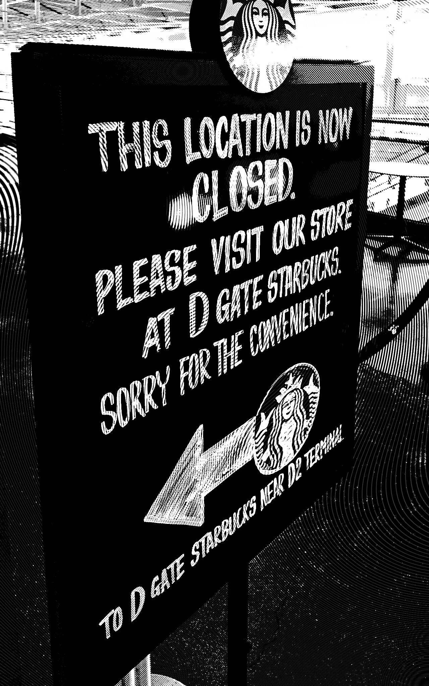
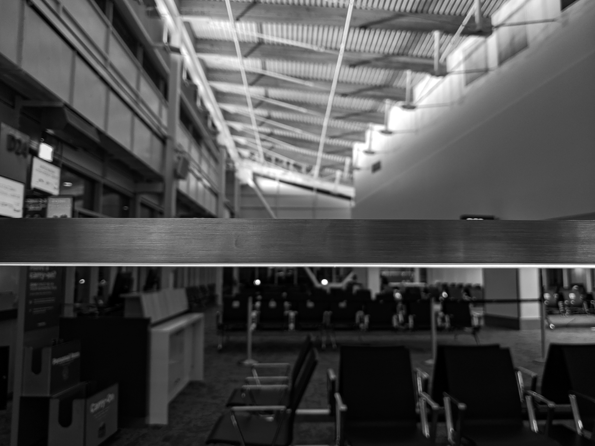
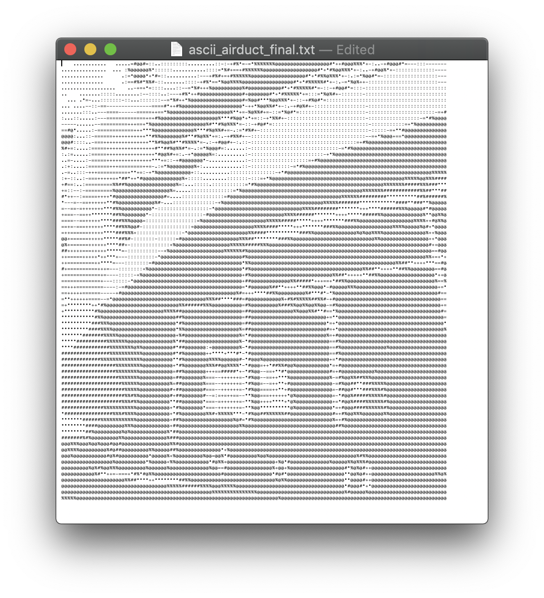

Sea-Tac
cori hudson
I love this weird little corner of the seattle-tacoma international airport.
It's like an industrial-themed Narnia for introverts; follow inscrutable directions to its entrance (signs for gates D21 - D26, marked with arrows but not illuminated), pass through a magical portal (a narrow, dirty hallway lined with benches filled with sleeping travelers), and suddenly you're in another world.
The first thing you see is a Starbucks (of course you do). This Starbucks is closed after 1pm, a strong hint that this world is entirely unlike the one you left behind.
The area itself resembles an old air hangar cut in half, all corrugated steel and pipes, softened by wooden slats holding up the roof.
Oddly, there are no airplanes in sight through the large windows (punctuated by air ducts) – the gates lead to buses that carry their passengers to some other (mysterious) location.
